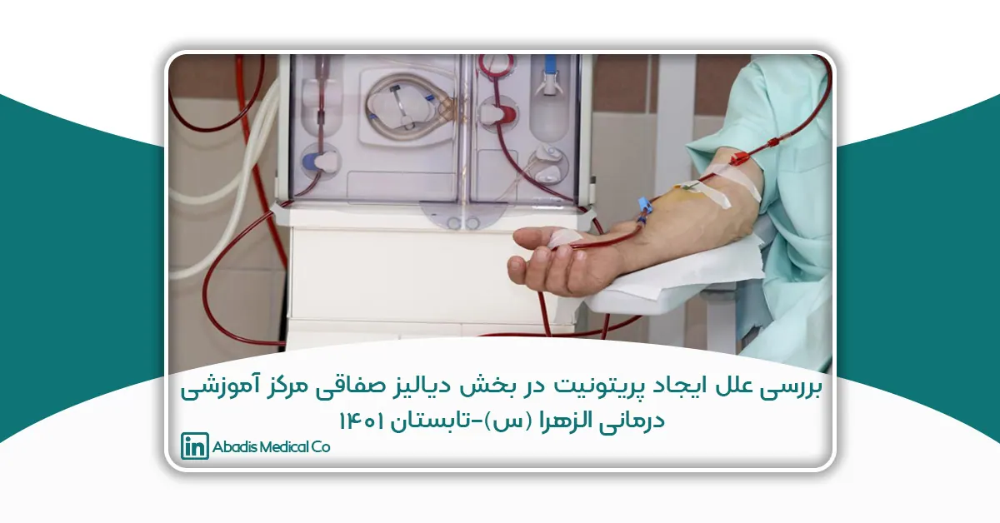
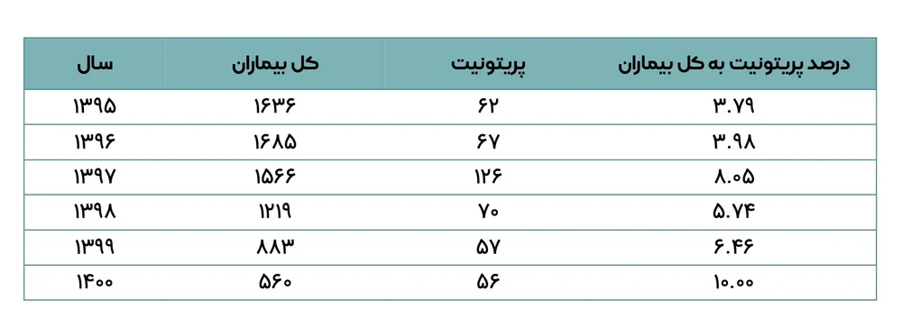
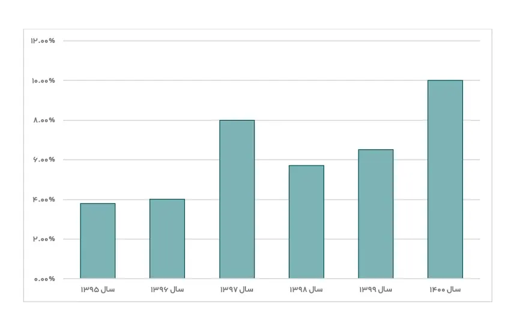

این مقاله توسط سرکارخانم آرزو پورداد،زهرا فروغی و زهرا بابایی نوشته شده؛ و برای دهمین کنگره کنترل عفونت ارسال شده است.
مقدمه
پریتونیت عبارت است از التهاب صفاق یا بخشی از آن می باشد و به عنوان یکی از اورژانسهای جراحی عمومی محسوب میشود که در صورت عدم تشخیص و درمان بهموقع مرگ و میر را تا سه برابر افزایش میدهد. در پرده صفاق ممکن است بر اثر آلودگی با میکروارگانیسمها، مواد شیمایی محرک یا هر دو آماس بوجود آید.
به طور کلی پریتونیت عفونی را به دو گره کلی تقسیم می کنند:
1) پریتونیت اولیه (خود به خودی یا ایدیوپاتیک) که در آن منشا اصلی عفونت داخل شکم مشخص نیست.
2) پریتونیت ثانویه که همراه با یک کانون عفونی مشخص در داخل شکم (پارگی آپاندیست و زخم معده و اثنی عشر) میباشد.
براین اساس و با توجه به اهمیت و افزایش پریتونیت(خصوصاً پریتونیت قارچی)در واحد دیالیز صفاقی مرکز آموزشی درمانی الزهرا از آنجایی که پریتونیت قارچی در مددجویان دیالیز صفاقی قابل درمان مدیکال به تنهایی نبوده و می بایست کاتتر بیمار خارج و بطور کامل از پروسه دیالیز صفاقی خارج شود و در بعضی از بیماران خارج شده از دیالیز صفاقی امکان همودیالیز نیز وجود نداشته و متعاقب آن دچار عوارض شدید و بستری مکرر و مرگ میگردند. در این مطالعه به بررسی علل ایجاد پریتونیت در بخش دیالیز صفاقی مرکز آموزشی درمانی الزهرا (س) در طی سال های ۱۴۰۰-۱۳۹۵ پرداخته شد.
روش بررسی
این مطالعه در مرکز آموزشی درمانی الزهرا (س)انجام شد. کارشناسان کنترل عفونت مرکز در مرحله اول با بازدید از واحد دیالیز صفاقی مرکز مواردی مانند رعایت بهداشت دست را در مددجویان, پرسنل و نحوه ضدعفونی تجهیزات و محلولها را مورد بررسی قرار دادند و آموزشهای مجدد در خصوص رعایت کامل بهداشت دست و سطوح را ارائه کردند.
در مرحله بعد آزمایش کشت از محلول دیالیز صفاقی مصرفی مددجویان به عمل آمد که در ۲ نوبت جواب آن منفی بود. همچنین بررسی درصد محلول الکلی مصرفی بین مددجویان نیز استاندارد بود .بررسی تغییر در نیروی انسانی واحد دیالیز صفاقی مرداد انجام گرفت که با توجه به عدم وجود مددجوی جدید در بین مددجویان مبتلا شده به پریتونیت در یک سال گذشته (هم زمان با تغییر نیرو در واحد) این مورد نیز رد شد. از دیگر مواردی که مورد بررسی قرار گرفت کیفیت تجهیزات استفاده شده در طی ۶ سال اخیر بود. در ادامه به یافتههای به دست آمده اشاره میشود .
یافته ها
جدول ۱ و نمودار ۱، فراوانی و درصد بیماران مبتلا به پریتونیت را نشان میدهد. در سال ۱۴۰۰ حدود ۱۰ درصد و در سال ۱۳۹۷ حدود ۸/۰۵ درصد بیماران مبتلا به پریتونیت شدهاند. این در حالی است که درصد ابتلا به پریتونیت در سال های ۹۸ و ۹۹ نسبت به ۱۴۰۰ و ۱۳۹۷ کمتر بوده است.

جدول ۱: بررسی کیس های پریتونیت در واحد دیالیز صفاقی در ۶ سال گذشته

نمودار ۱: درصد فراوانی افراد مبتلا به پریتونیت در سال های ۱۳۹۵–۱۴۰۰
نتیجه گیری
در بررسی تجهیزات مربوط به بخش دیالیز صفاقی بین سال های ۹۵ تا ۱۴۰۰ مشخص گردید ،در سال ۱۳۹۷ بهدلیل کمبود شدید ناشی از عدم ترخیص تجهیزات در گمرک برخی تجهیزات Reuse شده و مجددا مورد استفاده قرار گرفته است. در سال ۱۳۹۸ و ۱۳۹۹ با ارائه آموزشهای لازم در خصوص رعایت اصول کنترل عفونت توسط واحد دیالیز صفاقی و کنترل عفونت مرکز، نتایج نشان داد که درصد ابتلا به پریتونیت کاهش یافته است. این در حالی است که در سال ۱۴۰۰ تجهیزات استاندارد قبلی از چرخه استفاده خارج شده و تجهیزات با کیفیت پایین(دارای مشکلاتی نظیر سوراخ بودن کیسه های محلول، عدم فیکس شدن کانکتورها) با توجه به نشت محلول روی لباس مددجویان, وارد مرکز شدند و در اختیار بخشها قرار گرفتند. بنابراین احتمال افزایش ابتلا به پریتونیت در سال ۱۴۰۰ به دلیل افت کیفیت تجهیزات مصرفی به خصوص کانتورهای مورد استفاده میباشد؛ که جلساتی با شرکت تولیدی تجهیزات مزبور برگزار شد و مقررگردید تا حد امکان مشکلات مربوطه رفع گردد.